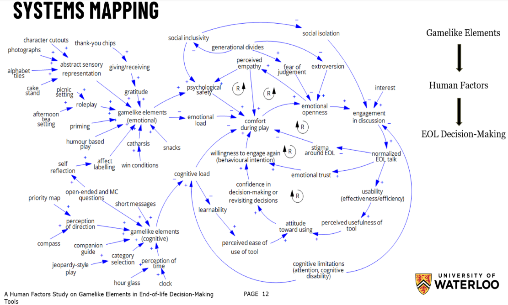

Systems Mapping
Systems mapping is a visual tool used to understand the relationships and interactions within a complex system. It helps identify key components, their connections, and the flow of information or resources.
Vensim · Causal Loop Diagramming ·
Stock & Flow Diagram · Systems Thinking
Causal Loop Diagram on Water Hardness Levels
From: SYDE 600 - Systems Theory, Models, Research & Design

Causal Loop Diagram on Conversation Games & the Human Factors in End-of-Life Decision-Making
From: Interim Seminar Presentation 2026
